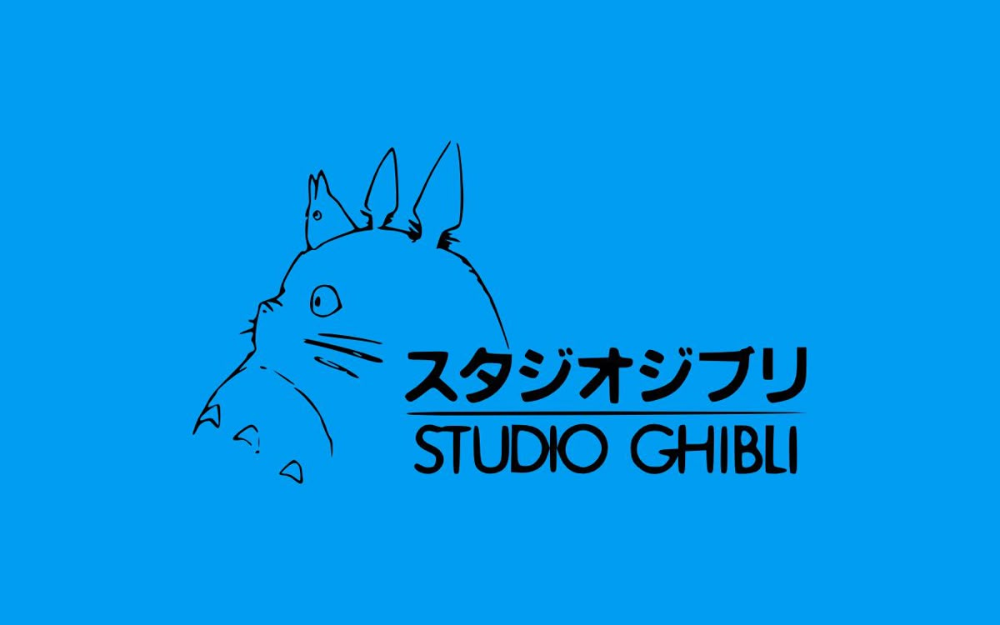
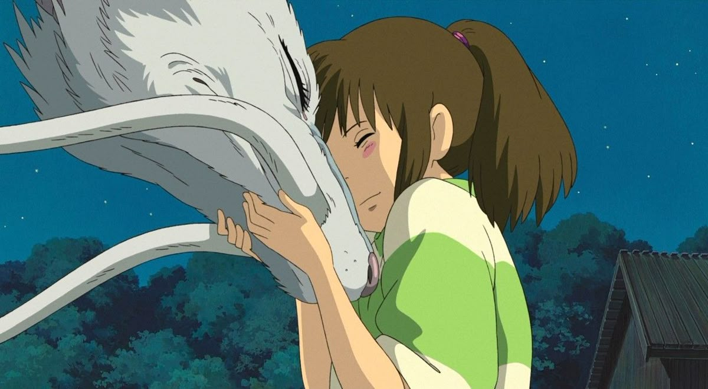
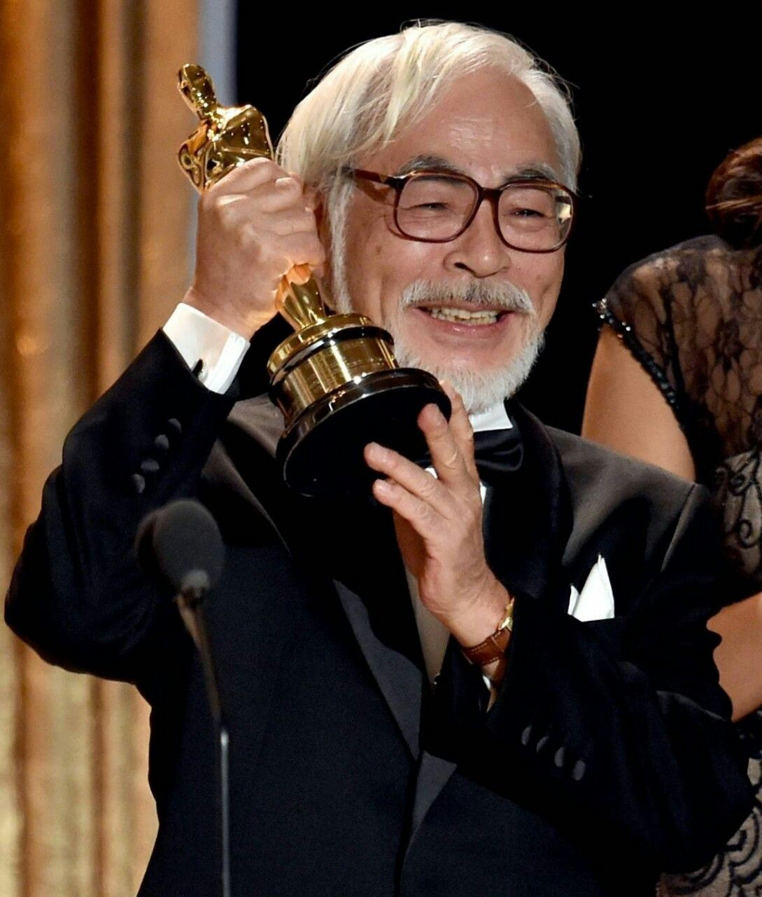
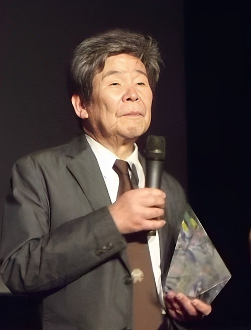
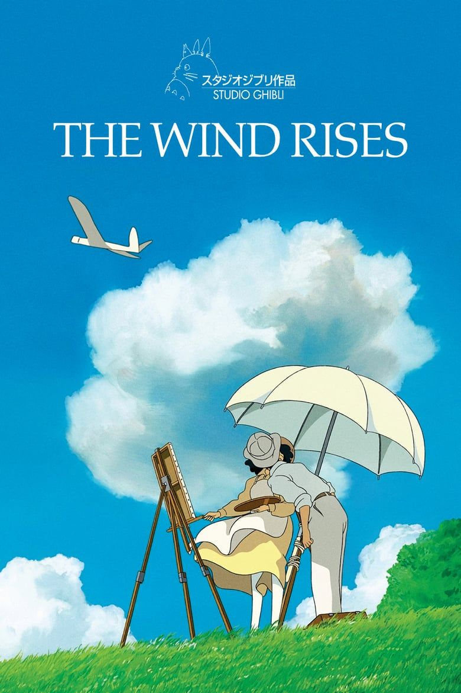
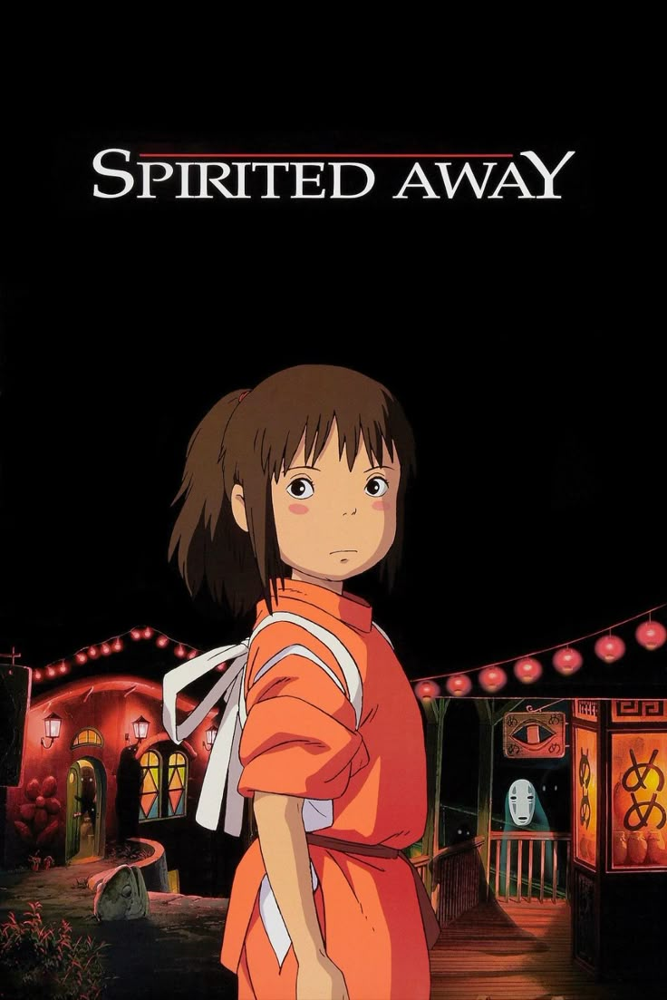
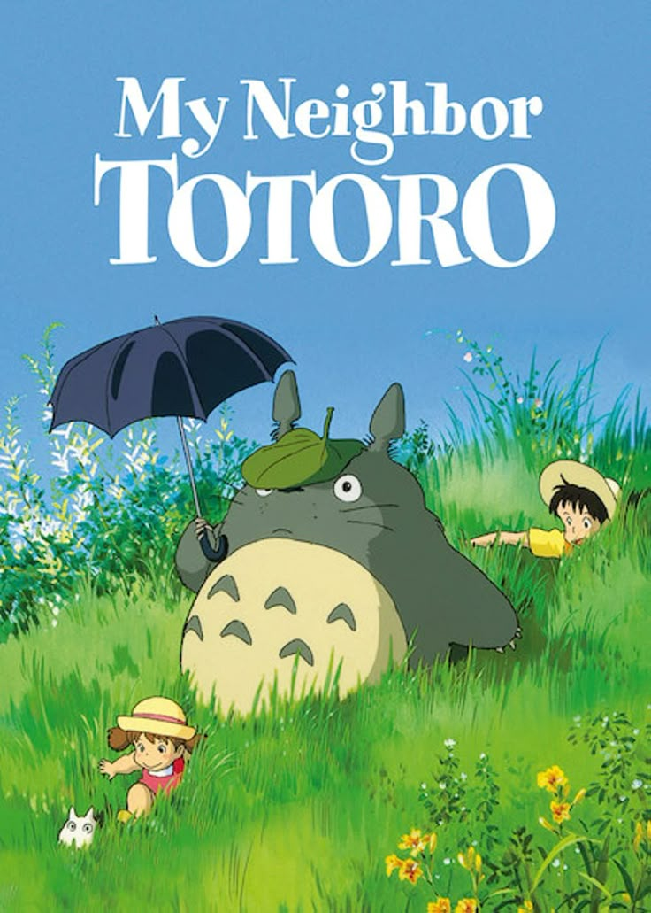
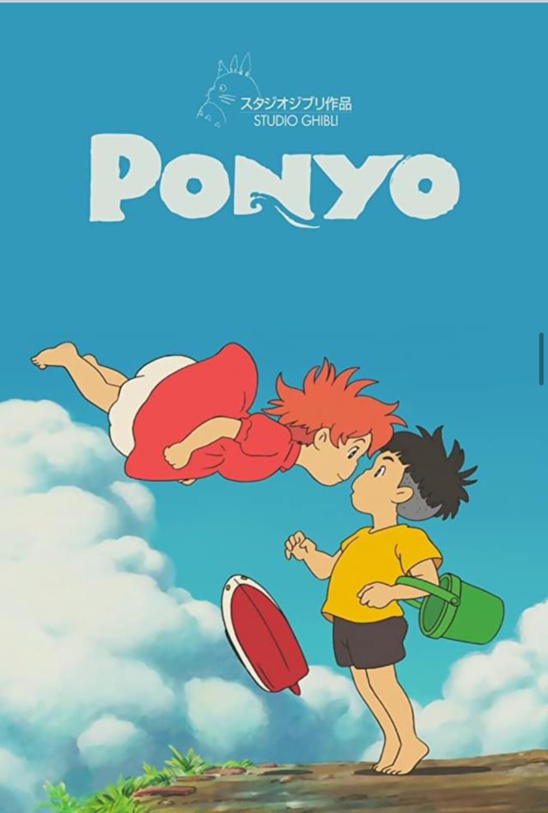
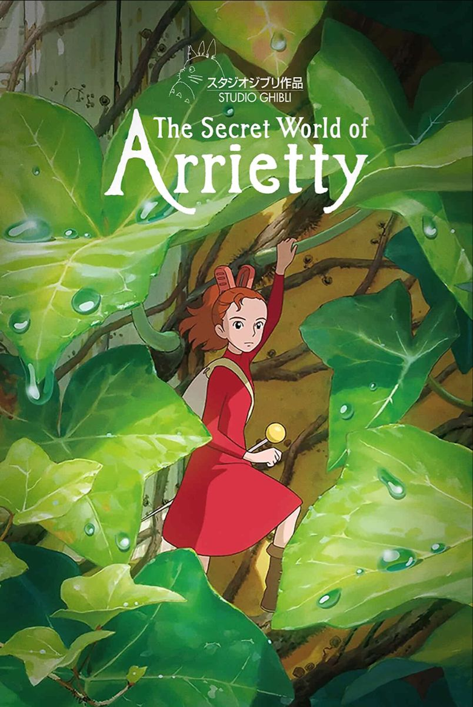
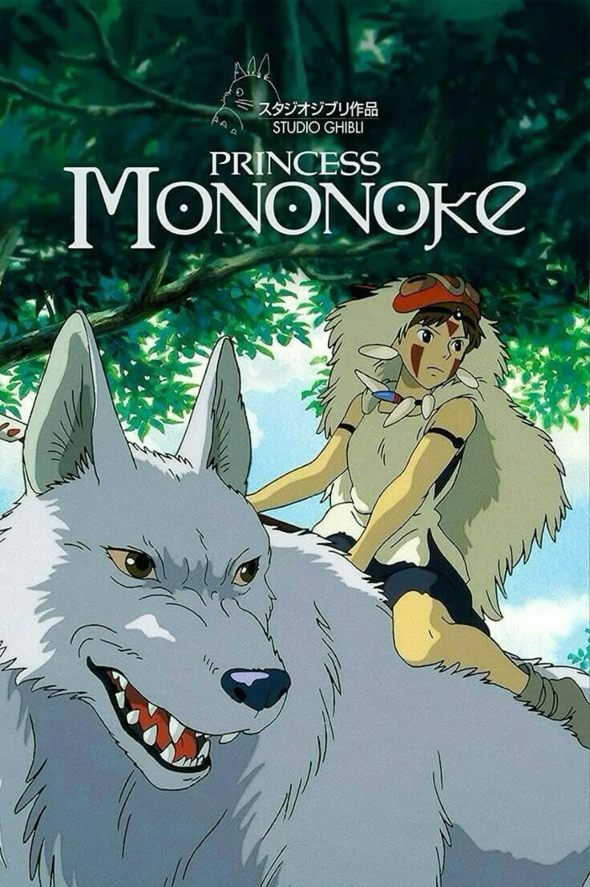

Selamat datang di dunia Studio Ghibli, tempat dimana imajinasi dan keindahan bertemu.
Studio Ghibli adalah studio animasi Jepang yang didirikan pada 1985 oleh Hayao Miyazaki dan Isao Takahata. Studio ini dikenal dengan animasi tangan yang indah, cerita emosional, dan karakter yang kuat. Film terkenalnya seperti My Neighbor Totoro, Princess Mononoke, dan Spirited Away, yang memenangkan Oscar dan Golden Bear, menjadikannya terkenal di seluruh dunia. Studio Ghibli juga memiliki museum di Tokyo dan dianggap sebagai ikon budaya Jepang yang menginspirasi banyak animator dan penonton.

Spirited Away (2001)








Copyright © 2025. All Right Reserved by Ridwan Sahidi Nugraha